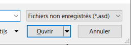

Contrôles
Bouton
 Terme anglais : button
Terme anglais : button
Sert à effectuer une action unique au moment où l’on appuie dessus.
Mnémonique
Si l’on utilise une mnémonique dans une interface, elle est accessible par la touche « Alt » et la lettre du mot est soulignée.
{kind=link}

Bouton à bascule
Termes anglais : toggle button, toggle
Contrôles semblables : case à cocher, bouton radio
Permet de définir une option avec deux états, un état « actif » et un état « innactif ». Les boutons à bascule peuvent prendre différentes formes. On peut considérer le bouton à bascule comme un type particulier de case à coher.
La fenêtre de mise en forme de Word possède un bouton à bascule pour le gras, l’italique et le souligné.
On utilise le bouton à bascule pour condenser la présentation (en opposition à un bouton radio).
Bouton à glissière
Termes anglais : slider, range selector
Contrôles semblables : champ de saisie d'entier
Sert à incrémenter une valeur le long d’une échelle. Facilite l’utilisation d’une valeur continue dont la précision exacte n’est pas primordiale. Par exemple, le volume sonore peut être géré avec ce contrôle, car la différence entre 11 et 12 (sur 100) n’est pas très importante pour la personne utilisatrice.
En cas de besoin de précision, il est possible de définir des incréments ou d’ajouter un contrôle de texte en complément pour permettre de saisir les valeurs.
Bouton radio
Termes anglais : radio button
Contrôles semblables : case à cocher, bouton à bascule, menu déroulant
Permet de choisir un élément parmi une liste d’éléments mutuellement exclusif. Une valeur, et une seule, doit toujours être sélectionnées dans la liste proposée. Comme toutes les options sont affichées en tout temps à l’écran, s’il y a plus de 5 options, le menu déroulant devrait être utilisé par souci d'espace.
Case à cocher
Termes anglais : checkbox
Contrôles semblables : bouton radio, bouton à bascule, menu déroulant
La case à cocher a deux utilisations principales :
- Permettre la sélection d’un élément optionnel (comme l’acceptation des termes et conditions)
- Permettre la sélection d’aucun, un ou plusieurs éléments dans une courte liste. Comme toutes les options sont affichées en tout temps à l’écran, s’il y a plus de 5 options, le menu déroulant devrait être utilisé par souci d'espace.
Les cases à cocher ont normalement deux états possible : coché et décoché. Dans certains cas, un troisième état indiqué par un ligne horizontal indique un état intermédiaire. On croise souvent cet état dans une relation hiérarchique ou certains enfants sont cochés et d'autres non.
Champ de saisie d'entier
Termes anglais : integer field, spinner, input stepper
Contrôles semblables : bouton à glissière, champ de texte
Permet de saisir un nombre entier et inclut généralement des boutons pour incrémenter ou décrémenter la valeur. La magnitude des incréments doit être ajustée selon le besoin. Il est aussi possible de préciser des valeurs minimale et maximale ce qui permet une validation des entrées plus directe.
S’il n’est pas possible de traiter avec la notion d’incrément ou que la portée des nombres n'a pas de sens avec un gestion de l'incrément, les boutons devraient être désactivés, ce qui donne au contrôle l’aspect d’un champ de texte.
Pour des nombres décimaux, l’utilisation du bouton à glissière peut être intéressante si la précision n’est pas un enjeu. Pour les valeurs numérique qui ne sont pas des nombres (comme un numéro de téléphone), le champ de texte devrait être utilisé.
Champ de texte
Termes anglais : text field, input field, text input
Contrôles semblables : champ de saisie d'entier, zone de texte
Permet de saisir une chaîne de texte courte (saisie sur une ligne). Le contrôle peut être accompagnée de règles de saisie, comme la longueur ou le type de données acceptées. Il est généralement possible d'utiliser une expression régulière pour valider le contenu d'un champ de texte, rendant ce contrôle le plus versatile dans le type de données supportées. Cette grande versalité ne permet pas à la personne utilisatrice de facilement deviner le format des données attendues. Il faut donc ajouter des indicateurs adéquats.
Le champ texte peut également inclure un texte de remplacement ( : placeholder) qui fournit des indications sur la façon de remplir le champ texte.
Ce champ peut également être utilisé pour la saisie des dates lorsqu’un contrôle dédié n’est pas disponible ou approprié. Les indicateurs et contraintes pertinentes doivent alors être appliquées au champ texte.
Menu déroulant
Termes anglais : dropdown menu, dropdown, combobox
Contrôles semblables : bouton radio, case à cocher
Sélecteur de date
Termes anglais : date picker
Contrôles semblables : champ de texte
Sélecteur d'heure
Termes anglais : time picker
Contrôles semblables : champ de texte
Zone de texte
Termes anglais : text area
Contrôles semblables : champ de texte